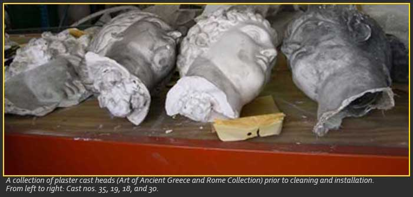
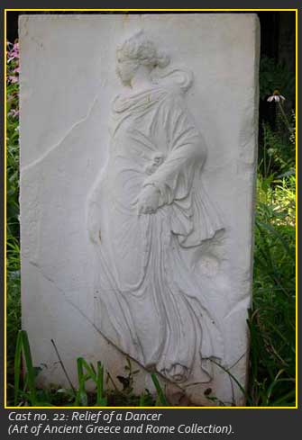

The Catalogue

This catalogue is a work in progress: a few of the casts have not yet been identified; and a number of entries still need to be written. Bibliographies are not intended to be complete, but the works cited will lead interested readers to additional sources. Those of us who have participated so far hope that this project will continue, and that others will feel free to contribute to the website - with catalogue entries, images, resources, essays, and discussion.
Students whose edited entries appear in the catalogue are individually credited. The other entries were written by Carol Mattusch who thanks all participants in what turned out to be the ten-year Plaster Cast Project.
The catalogue was originally designed by Stephanie LaSpada. This website was designed and created by Shellie Meeks and Stephanie Grimes. Tina Delis also helped bring the project to this website.
Catalogue numbers are the GMU inventory numbers.
Cast numbers refer to The Metropolitan Museum of Art: Catalogue of the Collection of Casts (New York, 1908).

Casts not credited otherwise in the entries were gifts to the university from the Metropolitan Museum of Art. Except where otherwise noted, the casts were all produced during the late nineteenth century.
How to Read Each Entry
Measurements are approximate: they are given in inches. H = height; W = width; L = length; D = depth. When the height includes the base, the base was made in plaster along with the plaster cast. Otherwise, the height is noted as being without base.
Useful web-references:
- World Cat for books in libraries worldwide: www.worldcat.org
- Grove Art on-line: www.oxfordartonline.com
- Perseus Digital Library for classical texts and subjects: www.perseus.tufts.edu
- Lexicon Iconographicum Mythologiae Classicae: www.limc-france.fr